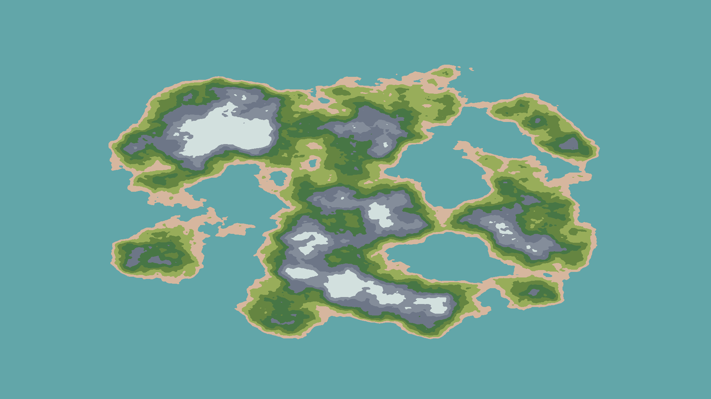

BOSSBORNE
This project started out as an attempt to recreate the effect outlined in
this video based of
this reddit post.
It however, quickly became one of my most favorite projects to work on. The implementation I came up with used Compute Shaders. Being the first time I worked with them it was both super exciting and terrifying.
Similar to how the video progresses, I started out with a height map. I used Perlin Noise in octaves to get organic looking islands and added a small function to help isolate the noise generation to the center of the screen.
By applying discrete colors over sets of value ranges of the height map, a visually captivating island-like landform is created. This versatile technique not only highlights the distinct features of beaches, grasslands, and mountains but also gives the landmass shapes an organic look with well-defined detail in interesting areas. Most importantly, it empowers you to create diverse and unique terrains, fostering creativity and innovation in your projects.
Using the height values, an unlit shader is employed to "ray march" through the texture, a key step in the technique. The shader is significantly enhanced with a sun's position, a crucial vector direction that not only guides but also dictates the ray marching process. Depending on conditions, rays either "escape" the landmass boundaries with respect to the simulated vertical direction or intersect with the height values in the direction of the ray march, creating a lit or in-shadow region of the landmass. A shadow mask is combined with the colored stage to make a ray-marched 3D-looking island.

Another feature I wanted to add was waves periodically crashing into the beach. In a compute shader kernel, I defined an area that would circumvent the landmass and provide a mask that would contain information about the nearest shore point, a vector pointing to it, and the magnitude of that vector. This mask (I love how pretty vector fields look) allows another shader to then calculate periodic values that can be used to compute waves whose thickness, speed, and coherence can be controlled at runtime. Although visually appealing, the initial stage of these waves lacked a natural feel. I used another higher frequency, higher scale layer of noise to add some offsets into the mask values. Incorporating these noise values into the waves’ shader provided a satisfying wave motion, resulting in a final terrain that is not just visually appealing, but also deeply satisfying.
Adding some simple noise-based clouds that pan and scroll over time results in this
*inserting non-static result here*

While I am currently working on some optimizations, I will be smug about the fact that all the real-time processes involved run within 2ms and at ~500fps. HEHE
Unfortunately, compute shaders are not supported at the time of development by the WebGL platform, and there are some issues I am facing with packaging them.
I will have a demo that you can download soon-ish.